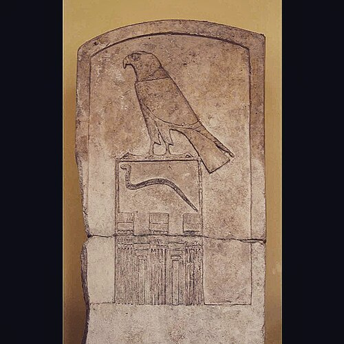

Narmer Palette
A ceremonial siltstone palette showing a king smiting an enemy — one of the earliest monuments of unified Egypt, with its conventions already fully formed.
Pharaonic Egypt and its southern rival Kush left monuments and portraits of startling precision. The pyramids alone span a thousand years — and Nubia built more of them than Egypt did.

